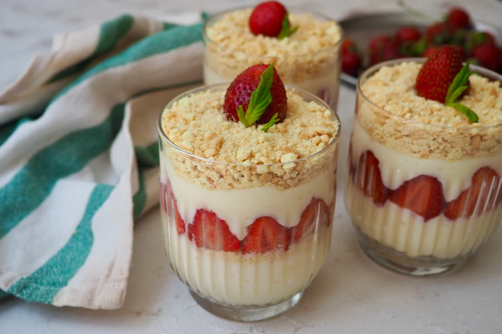

Magnolya
İçinde yumuşacık bir puding var. Ama bildiğimiz pudinglerden çok daha lezzetli, kıvamı çok daha farklı.
İşin sırrı pudingi pişirdikten sonra içine krema ilave etmekte saklı. Bu şekilde çok daha hafif bir tadı
oluyor.
Tarif:Ecem Sultan Öztekin

Kaç Kişilik: 4 Kişilik
Hazırlama Süresi: 15 Dakika
Pişirme Süresi: 15 Dakika
Magnolia Tarifi İçin Malzemeler
- 5 su bardağı süt
- 1 su bardağı toz şeker
- 1 paket vanilya
- 1 adet yumurta sarısı
- 2 yemek kaşığı nişasta (mısır veya buğday nişastası)
- 2 yemek kaşığı un
- 1,5 çay bardağı krema
Magnolia Tarifi Nasıl Yapılır?
- Bir tencerenin içerisine süt, şeker, nişasta, un ve yumurta sarısını aktarın. Güzelce karıştırın.
- Orta ateşte, sürekli karıştırarak muhallebi kıvamına gelene dek pişirin.
- Ocaktan alıp vanilyayı ekleyin ve karıştırın.
- Ilımaya başlayan kremayı ilave ederek karıştırmaya devam edin.
- Bu sırada bisküvileri rondodan geçirin. Çileklerin saplarını çıkararak dilediğiniz boyutlarda kesin.
- Soğuyan pudinginizden birkaç kaşık alın. Bir kupun tabanına yayın. Üzerine bisküvi ve çileklerden
ilave ederek katlar çıkın. Tüm bisküvi, puding ve çilekler bitene kadar kuplara bu şekilde
bölüştürün.
- Ardından buzdolabında 3-4 saat kadar soğumaya bırakın. Servis aşamasında üzerini bisküvi, çilek ya
da muz, çikolata sos gibi farklı malzemelerle süsleyerek servis edin.